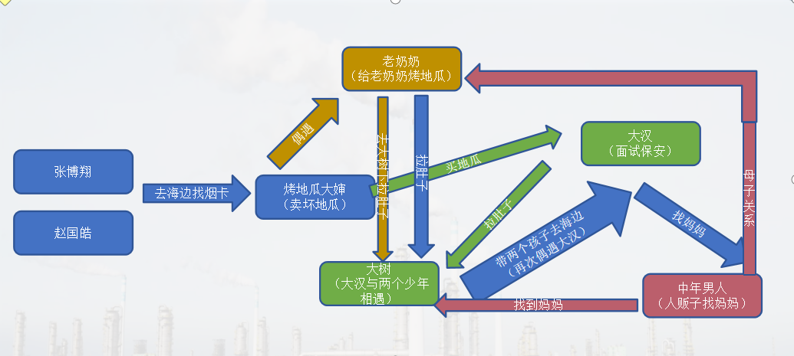
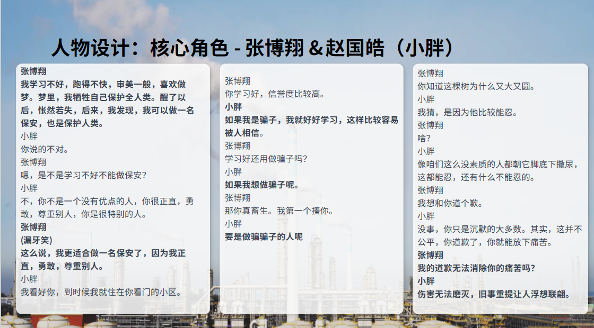
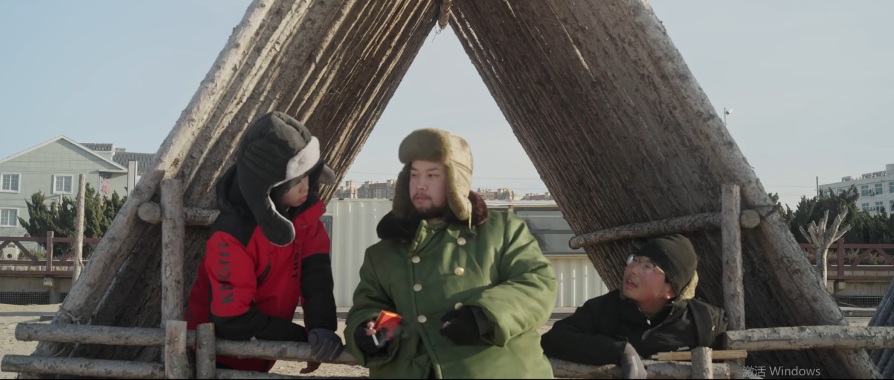
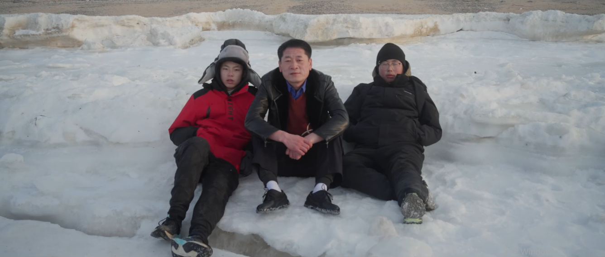
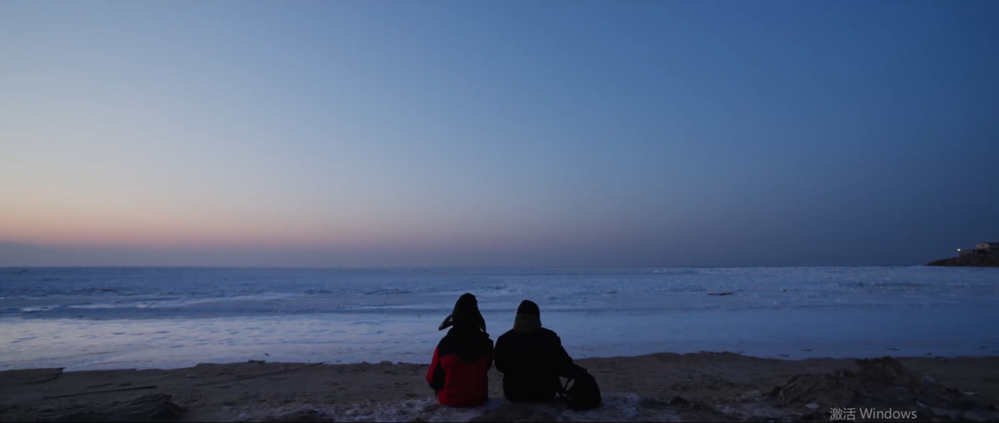

《驴唇对马嘴》
类型：黑色幽默、少年、公路
预告片：
完整作品：
一句话故事
深冬，东北滨海小城里，两个男孩为寻一张“好烟卡”出发，循着漫无边际的幻想前行，或许所有深刻的规则，早在少年时第一次提问时就已听见回声。
核心人物冲突

创作阐述
烟卡是由将烟盒上剪下来的烟标折叠制作而成的卡牌。在2024年，“烟卡”在广东、广西、湖南、海南等地小学校园中流行起来，用于“拍烟卡”游戏。具体玩法是几个人跪坐或趴在地上，一人出一张烟卡，通过“剪刀石头布”决定谁先拍，最先成功将烟卡拍翻的人就能收走该烟卡。
玩烟卡，有自己的游戏规则。烟卡分三六九等，其价值由烟的价格决定，越是昂贵的香烟烟卡的价值越高，外国烟因为比较少见的缘故也可以被评为上等烟卡。
为了玩“烟卡”，孩子们会到处捡烟盒。如果家长不抽烟，也捡不到烟盒，孩子们还会去小卖铺购买专门做好的“烟卡”。当然，烟卡以在大街上捡到的为优，一些购买来的烟卡会被大家质疑是假烟卡。
在了解到烟卡的游戏规则后，我惊奇的发现，少年对于烟卡等级的认定竟然与成年人对于事物价值的认定是由金钱决定的这一标准感到惊奇，是否可以通过此为切口，来探讨同一件事物，我们在少年时期的观点与长大后的观点有多么的大相径庭，于是在改剧本中，我探讨了价值观、梦想、爱情、友谊等诸多话题。另一方面，选择少年时期是因为我觉得少年是一个很特别的年龄段，这个年龄段的孩子们既有着对儿童时期的稚气未脱，又有着对成人规则的一知半解的懵懂感，总是自以为的做出了很多可爱可亲的事情。
故事主要围绕着两条线索：
1.少年找烟卡
围绕着这一目的，二人展开多个行动：张博翔请求赵国皓陪他去、出发前二人买烤地瓜吃、在分岔路口进行选择、到达海边接受幻想破灭的事实、劝说大汉把烟盒留下，二人决定不再寻找。
2.烤地瓜摊位的爱恨纠葛
大婶在摊位贩卖坏地瓜，两个孩子吃了烤地瓜、大汉吃了烤地瓜、孩子们给老奶奶烤地瓜，最后偶遇找妈的中年男人，根据地瓜精准帮他找到妈妈。
作品一直在反复传达着同一个主题：所有深刻的规则，早在少年时第一次提问时就已听见回声。少年时期我们对于世界总有着各种各样奇怪的、另类的畅享，可长大后回头看才发现自己早已不复当年的质朴纯真，驴唇对马嘴，原为：驴唇不对马嘴，比喻形容说话或行动与实际情况不符，正如孩童时期与成年时期我们对待同一件事物的看法虽出发目的不同，但结果却惊人的落在一处。例如：张博翔说自己想做保安，他的理由是我想保护人类。而找工作的大汉也想去应聘保安，他的理由是这是一份清闲的工作。

3.成片静帧



4.完整剧本
《驴唇对马嘴》
场景一 日 外
空镜开场
场景二 日 外 马路
小胖从路左往路右走，神态谨慎。张博翔从路右往路左走，表情骄傲，蹦蹦跳跳。
场景三 日 外 广场
两个人走出画，画面中分别出现二人抬头的脸。
再一转，小胖面前是一个掉地上长牙的烤地瓜和烤地瓜推车。
张博翔面前是一三个正在拍烟卡的小孩。
烤地瓜车
(大喇叭循环播放)
地瓜地瓜，又香又甜的烤地瓜，快来买。
小胖
(捡起来，递出去)
大婶，你的地瓜。
大婶歪着头，随即伸出手，接过来。
烤地瓜大婶
谢谢。
小胖没有松手。两个人动作上进行拉扯。
小胖
（躲避一下）
长丫了，是过期地瓜。
烤地瓜大婶
地瓜太多了，总有几个拔尖冒头的，我会挑出去扔掉的，谢谢。
小胖
在这儿扔吧，食品安全需要看的见的放心。
烤地瓜大婶
换个地方扔吧，在这儿，被捡走误食会造成不可挽回的后果，我的良心会受到谴责的。毕竟，食品安全需要你我他的保障。
小胖
谢谢——
小胖松手。
烤地瓜大婶推着车离开。
烤地瓜车
(大喇叭循环播放)
地瓜地瓜，又香又甜的烤地瓜，快来买。
场景三B 日 外 广场
张博翔
(（掏出来，递出去）)
都睁大眼睛瞧瞧。
小孩们歪着头，伸出手，接过来。小孩子们震惊的表情。
孩子王
哼——是真是假还不一定呢。
身后的跟班，一个跟着耍头，一个一直擦眼睛。
张博翔
你在质疑我的烟卡还是我的人品。
孩子王
哼—— both。你们俩干嘛呢？
孩子甲
增加气势
孩子乙
增加深度。
众人没说话再次看向孩子乙。
孩子乙
士别三日当刮目相看。
孩子王拿过卡，从鼻尖掠过，第二张再次略过。第三张再次擦过。
孩子王
有问题——这烟卡是人造的。
张博翔
证据！
孩子王
哼——烟味漂浮，没有深入烟卡，并且味道苦涩不香醇，一看就是人为做上去的。
张博翔
血口喷人。
孩子王
哼——如果是天然形成的烟味，时间不同，种类不同，味道会有所区别。可你们闻闻他的，所有烟卡都一个味，缺乏层次的变化。所以这些都是廉价量产的人造烟卡！
众人都学着孩子王的样子闻。又站了孩子王身边。
张博翔
不可能，这是我叔叔给我的，他说保真，而且他是个城实的人。
众人沉默又站在中立的位置。
孩子王
哼——那你们就一起玩儿吧，不过小心别被换了卡，裤裆都输没了才相信我的鼻子。
众人站在了孩子王身后很果断，用手捂住自己的裤裆里的卡。
孩子王
(不屑)
哼——
一伙人浩浩荡荡的离开。
张博翔
(突然发疯)
你们回来。这就是真的。
赵国皓走进画面。
场景四 公交车站 日 外
小胖和张博翔在等车。找妈妈的中年男人经过，东张西望。
小胖
练习册今天带了吗？
张博翔
这不重要了。（心死）
小胖
老师说这次你再不带，就要叫人揍你了。
张博翔
他不敢，为人师表禁止涉黑行为。
小胖
是叫你妈来，让她揍你。
张博翔
没事，这也不重要了，不差这一顿了（微笑）——赵国皓，我们走吧。
小胖
我成绩不错，没到这一步，你也想开点。
张博翔
我的意思是——咱们别去补课班了，帮我去找烟卡吧 please。
小胖
不行，补课费都交了，我们需要考虑成本问题。
张博翔
我给你钱。
小胖
多少？
张博翔翻书包，掏出一块折叠的屁股垫，然后打开，扔到地上。
张博翔就跪下了。
小胖
在哪？
张博翔
在这儿。
(示意膝盖)
先欠着，等长大给。
小胖
怎么还带着垫子。
张博翔
我有小寒腿。
小胖扶起张博翔。
小胖
你不是已经有很多烟卡了吗？
张博翔
我没有顶级的，烟卡分三六九等，我的太low。
小胖
烟没了，盒就都是垃圾，咋还分等。
张博翔
个人有个人的追求。我妈说，骨灰盒还分价呢，不努力，死了都只能住在最low的合成板里。
小胖
我想海葬。
张博翔
我死了，想树葬。
小胖
树葬好，到时候还能给养份，谁来给我烧纸还能带个小胖牌苹果回去。
张博翔
他是倒数第二。学又学不过，玩儿又比不过，这很悲哀
小胖
好吧，我帮你。
张博翔
赵国皓你真是个学习好而且不自私的人。
小胖
知道我为什么帮你吗？
张博翔
因为我倒数第一又被人嘲讽，他们都不和我玩，我太可怜了。
小胖
不，因为只有你不叫我小胖。
张博翔看着小胖再次铺开垫子。准备跪下，小胖扶住他。
小胖
兜里有钱吗？
张博翔又把垫子铺在地上。
小胖
不是膝盖里，是兜里，找卡之前不能给我买点吃的，我有点儿饿了。
张博翔点点头。
场景四 日 外 烤地瓜摊位
两个人走到一个烤地瓜摊位上，大娘正在叫卖烤地瓜。
烤地瓜车
(大喇叭循环播放)
地瓜地瓜，又香又甜的烤地瓜，快来买。
张博翔和小胖站在摊位面前。
烤地瓜大婶
呦，是你啊，关心食品安全的好孩子，我给你们挑两大个儿的。
两个人笑容满面。
张博翔
一个多少钱啊。
烤地瓜大婶
还没上秤呢。
张博翔看着巨大的放在称上的烤地瓜目瞪口呆。
张博翔
论斤卖啊，挑两个小个的吧，我们吃不完。
烤地瓜大婶
吃的吃不完是你们的本事，能不能卖出去是我的责任。
小胖
我们没钱。
烤地瓜大婶翻了个白眼，放在秤上两个小头的地瓜（用秤杆量的）
烤地瓜大婶拿出计算机，敲计算机、
计算器
归零，二点零八×七等于十四点五六元。
烤地瓜大婶
十五，还有四毛四的人工费。
张博翔
牌子上没写啊。
烤地瓜大婶
左下角。
两人才注意到左下角的一行小字：人工费0.44元。
张博翔数着零钱给烤地瓜大婶，然后接过热乎乎的地瓜。
两个人站在原地未动，盯着大婶。小胖缓缓开口。
小胖
请问哪里可以用餐。
烤地瓜大婶指了指路边，两个人离开。
这个时候有一个彪形大汉虎视眈眈的走过来。
大汉
三个烤地瓜。
场景五 马路牙子 日 外
小胖和张博翔吃烤地瓜，彪形大汉坐过来，坐在张博翔旁边，张博翔看了一眼，默默换了个座，小胖挨着大汉，小胖默默地站起来，坐到了张博翔的另一边。
小胖张博翔对视了一眼，赶紧吃了几口。腮帮子塞得满满的，剩下一个张博翔踹进兜里，两个人走出画面。
场景六 一个分岔路口 日 外
赵国皓和张博翔站在一个分叉路口。
张博翔
接下来我们走哪条路？
小胖
(指向左边)
这边是商业街，人员流动大，烟卡资源丰富——
张博翔和小胖仿佛进入小胖描述的世界。
场景七 商业街 日 外
小胖和张博翔两个人在街上。地上有很多的烟卡，小胖和张博翔对视了一眼，张博翔一个箭步冲出去要去捡起来。
这个时候从街道两边挤进去好多人，把地上的烟卡抢光了。
小胖无奈地拍拍张博翔的肩膀。
场景六b 一个分岔路口 日 外
赵国皓和张博翔站在一个分叉路口。
小胖
成也人多，败也人多。
张博翔
另一边呢。
小胖
去海滨公园，有钱有闲的人才会产生对自然和美的追求，另外海边捡烟卡的小孩不多，竞争压力不大。
场景八 海边 日 外
赵国皓和张博翔站在滨海公路。
面前，满地都是烟卡。两个人高兴地手舞足蹈。
场景六c 一个分岔路口 日 外
赵国皓和张博翔站在一个分叉路口。张博翔傻笑。
张博翔
这么好，为什么其他人不去。
小胖
路途遥远，风餐露宿，预设的美好前景充满着不确定性。
张博翔没有说话，两个人站在路前呆了很久。
小胖
你觉得，我们应该走哪条路？
张博翔
或许有一天，我们能长出翅膀。
两个人开始往海边方向走。
小胖
你确定吗？
张博翔
不确定，但我不喜欢斗争，要和谐。
两个人上路选择往海边走。
张博翔
你冷不冷？
小胖
(摇头)
有点饿。
张博翔
我还有个地瓜一会儿给你吃。
张博翔摘下把手套分小胖一只。
场景九 日 外 马路边
两个人在马路上走。周围光秃秃的，山坡上立着牌子：珍惜生命，谨防溺水。
张博翔
我发自内心的希望能捡到一张稀有烟卡。
小胖
哪种算稀有的。
张博翔
荷花啊——和天下呀，放在货架最上面一排的——对！还有外国的烟，这种比较少见的。
小胖
你最喜欢哪一种。
张博翔
只要是稀有的我都喜欢。（压低声音）就有一种，你知道中南海吗？
小胖
在北京。
张博翔
是一种烟，十块一包，我爸就抽这个。他们看不上，我不好意思拿出来，我家有二十二个，壳是淡淡的蓝，有珠光，那种蓝比大海浅，没天空蓝，远远地不着边际，挺忧郁的。
小胖
挺美好的。
张博翔
我们还有多远？
张博翔抬头看看不见尽头。
小胖
眼是懒蛋，脚是好汉。
小胖从后面抓住他的肩膀晃了晃。
一个拐弯路口一个老奶奶穿着貂皮大衣，带着兔毛帽子，一条花色裤子。走到两个孩子面前。
奶奶不说话，就是看着两个孩子，三个人对峙很久。
奶奶
你们是来找我的吧，我是不会跟你们走的。
张博翔和小胖对视一眼。
张博翔
奶奶你需要我们的帮助吗？
奶奶
（朗诵强调）
别把我当老年痴呆！？我清醒得很，我不回去！我不能忍受一个人孤独的枯萎。我要在大自然中奔跑，在树木小草的低谷期和他们交友，用血肉哺育他们，等待下一个春天。
奶奶
（开始唱歌）
拉大锯，扯大锯，老家门口唱大戏，接姑娘，嫁女婿，小外甥也要去~
奶奶绕着二人转了一圈，一曲毕。
奶奶
一首儿歌献给在场的朋友们。
周围的风经过，花草树木的叶子随之嗡嗡作响，像在鼓掌。
奶奶
我渴望被记住。
小胖
会的，真正的艺术家，在于生活与艺术不离不弃，我会记住您的。
小胖和张博翔准备离开。
奶奶
等等，我还有一个问题。
两个人转身看着奶奶。
奶奶
你们有吃的吗？
张博翔想了一下掏出兜里的烤地瓜递了过去。老奶奶坐在原地吃烤地瓜。
两伙人背道相行。
场景十 大树 日 外
两个人继续前进。
张博翔
还有多久会到。
小胖
不知道，往前走吧。
张博翔
等我们捡到稀有烟盒，你帮我做见证这是大自然中捡来的，不是人为做的。
小胖
为什么要我作见证。
张博翔
你学习好，信誉度比较高。
小胖
如果我是骗子，我就好好学习，这样比较容易被人相信。
张博翔
学习好还用做骗子吗？
小胖
如果我想做骗子呢。
张博翔
那你真畜生。我第一个揍你。
小胖
要是做骗骗子的人呢。
张博翔
骗骗子的人，比如呢？
小胖
嗯，贩卖人贩子，把他们卖到黑砖窑。你呢？你长大想做什么？
张博翔
我学习不好，跑得不快，审美一般，喜欢做梦。梦里，我牺牲自己保护全人类。醒了以后，怅然若失，后来，我发现，我可以做一名保安，也是保护人类。
小胖
你说的不对。
张博翔
嗯，是不是学习不好不能做保安？
小胖
不，你不是一个没有优点的人，你很正直，勇敢，尊重别人，你是很特别的人。
张博翔
(漏牙笑)
这么说，我更适合做一名保安了，因为我正直，勇敢，尊重别人。
小胖
我看好你，到时候我就住在你看门的小区。
张博翔
我们还有多久到。
小胖
照这么走下去，我们马上就到。
张博翔和小胖继续往前走，旁边有一颗圆形的大树。
张博翔放了个屁。小胖冲他嘿嘿的笑，这个时候小胖自己也放了个屁。张博翔也漏出牙嘿嘿的笑。
张博翔还在笑，小胖痛苦面具。
小胖
不好——
张博翔和小胖看向四周，锁定大树。
场景十一 大树下 日 外
两个人蹲在地上拉屎。
小胖用力，一辆按着喇叭的车经过，轰隆隆。张博翔用力，一辆三轮经过，哐哧哐哧的响
张博翔
你知道这棵树为什么又大又圆。
小胖抬头看
小胖
我猜，是因为他比较能忍。
张博翔
啥？
小胖
像咱们这么没素质的人都朝它脚底下撒尿，这都能忍，还有什么不能忍的。
张博翔
我想和你道个歉。
小胖
啥？
张博翔
上次我不该装成没看见，他们把吃剩下的倒进你的饭盘里。
小胖
没事，你不是第一犯罪确定人，你只是沉默的大多数。其实，这并不公平，（叹气）你道歉了，你就能放下痛苦。
张博翔
我的道歉无法消除你的痛苦吗？
小胖
伤害无法磨灭，旧事重提让人浮想联翩。
张博翔
对不起，我再次伤害了你。
小胖
没关系，我们是朋友，朋友应该成全。你带的纸多分我一点，我需求量大。
张博翔扯开纸，递给小胖、
张博翔
我想回去了，走不动了。
小胖
你不想超过他了。
张博翔
回去补课吧，下次我争取做倒数第二。
张博翔提好裤子。
小胖
晚了，从成本考虑我们浪费了补课费和信誉。亏本的卖卖不能干。
张博翔
我回去帮你写作业。
小胖噗嗤笑了。小胖伸出手让张博翔拉他一把。
两个人从草丛里走出来，这个时候一辆车停在路边，，一个开三轮车的大汉（烤地瓜大汉）凶神恶煞的四处在看。
小胖
是刚才买烤地瓜的那个人。
张博翔
冲我们来的。
小胖
嘘！
小胖拽着张博翔示意躲在树下，两个人猫着腰，蹲在树边上。
张博翔
（捂住鼻子）
yue-你叫它忍着，早晚有一天它叫你忍着。
小胖用两只手堵住鼻孔。
小胖
先踩点，再精准捕捉，人贩子的一贯套路，坏了——肯定是察觉到我有对这个组织的潜在风险。
张博翔
那怎么办，我害怕。
小胖
敌强我弱时，躲，忍一时风平浪静，退一步。
张博翔
不能退了。
回头张博翔嫌弃的表情。
两个人捂着鼻子靠在一起。许久。
两个人蹑手蹑脚的从树后面探出头来，大汉突然冒出头来。
三人对视。吞口水。大汉向两个小孩伸出手。
场景十二 大树下（背面）日 外
三个人蹲在一起拉屎，大汉的手里有手纸。
张博翔和小胖蹲在两边。
大汉
你们知道吗？这是一个人类最脆弱的时刻，任何的风吹草动都将引起盆腔共鸣。
小胖
叔叔，你是坏人吗？
大汉一着急，下面跟着噼里啪啦。
大汉
你这个小胖子是不是以貌取人了。我虽然长相凶神恶煞，可我的心灵却是晶莹剔透。
张博翔
叔叔，你为什么尾随我们。
大汉又一阵。
大汉
我没有尾随你们，只是恰巧我们是同路人，我要去面试，恰巧肚子饿了，恰巧有个烤地瓜摊，恰巧想拉肚子，附近只有这一颗树，恰巧遇到了带了手纸的你们。
小胖
是去面试人贩子吗
大汉又是一阵噼里啪啦——
大汉
去面试保安，就在海边的工厂。
张博翔
保安？！
小胖
海边？！
二人
高尚的叔叔能带我们一程吗？
三人蹲坑拉屎，两个孩子看着大汉。
场景十三 日 外 工厂
三个人看着下面的厂子，车停在路边。
大汉
这个厂子福利待遇杠杠的，今天面试，明天上岗，风吹不着，雨淋不着，屁股一放，茶水一泡，报纸一摊，没治了。
张博翔
是不是有很多员工。
大汉
那肯定的呀，进出都得接受我的检查，责任很大的。
两个人继续目瞪口呆的看着。
大汉
时候不早了，你们看
(大汉手指前方)
前面就是海边。
小胖
谢谢叔叔。
大汉准备离开。
张博翔
叔叔，可不可以给我留个信物？
大汉
(低头在怀里翻找)
这个给你，迷茫时希望能给你指明方向。
张博翔双手接下。
大汉开车离开。
大汉
再见了，小伙子们！
小胖
咱们走吧。
张博翔
走吧，有了这把伞，我觉得马上就到！
张博翔打开伞，拉着小胖、向前出发。
镜头一转他们面前是一整个工厂。
场景十四 过场（马路） 日 外
两个人继续往前走，风很大，二人打开伞挡着风走。
时而像盾牌，时而又像降落伞，时而又像乌龟壳。
场景十五 海边公路 日 外
收伞，两个人到达海边。两个孩子站在海边的公路上。公路两边停车不多。
小胖
感觉和预想的不太一样。
张博翔
来都来了，往前走走吧。
两个人并排往前走。
沿着海边，一抬头。前面有一个游乐场。
两个人对视一眼，往游乐园位置走。
场景十六 游乐场 日 外
两个小孩绕着游乐场在地上搜寻。
放着儿歌：春天在哪里啊，春天在哪里？春天就在小朋友的眼睛里。
一个穿着红色夹袄的大姐姐从张博翔身边走过。张博翔回头看红色身影，迅速跑到赵国皓旁边。
张博翔
(摇摇头)
咱们歇会吧。
两个人坐在花坛边。
小胖
对不起啊，很多和我估计的不太一样，天气太冷了，人来得少，来的人少了，抽烟的人就少，抽烟的人少了，抽好烟的人就少了，这是一个连锁反应。
张博翔
懂了
张博翔呆呆地望着海面。
张博翔
我还有一个秘密，你别和别人说。
小胖点点头。
张博翔
我家隔壁住着一个大姐姐。去年暑假她给我补英语。
在张博翔讲完这句话之后，一个穿着红色裙子的女孩拿着一本英语书。
红裙子女孩
active——a-c-t-i-v-e你学会了吗？
张博翔痴汉一样的点头。
红裙子大姐姐离开。
张博翔
你知道这是什么感觉吗？
小胖
大妈
是不是心跳加快，呼吸急促，大脑放空！
张博翔冲小胖点头。
小胖
据我判断这种情况是——你得高血压了，得吃降压药才能治。
张博翔
不是的，我分得清。
小胖
会不会只是错觉。
张博翔
可能是吧，但这辈子我就会心动这一次了。你看，多漂亮啊。
张博翔指向海边，两个人往海边方向走，
张博翔
如果天气不冷，海就不会冻上，冻不上我们就看不清浪花的形状，看不见就不知道它有多美，这也是一个连锁反应。
小胖
浪花被冻上的时候，会意识到自己被定格了吗。
张博翔
这个问题，要问海风。
小胖
走吧。
张博翔
去哪？
小胖
边走边看吧
场景十七 海边 日 外
两个人走到海边，小胖指了指前头，张博翔惊喜的发现，一个男人背对着他们正在抽烟。
两个人赶紧跑到男人旁边
张博翔坐下以后，中年男人奇怪的把屁股往右移动，这个时候小胖站到了右边。
大汉
是你们呀。
小胖
叔叔，我们又见面了。
张博翔
叔叔，你的保安服呢?
大汉
唉，一言难尽。
大汉默默地抽了一口烟。
大汉
你们觉得保安是个很复杂的职业吗？
张博翔
不，我认为这是个纯粹的职业。
大汉
对嘛，纯看大门的，他竟然说这是技术工种，要我有文化。
大汉再抽一口烟。
小胖
你没有面试上。
大汉
是我不屑于干。
大汉拿出烟盒再次点一根烟。
小胖和张博翔对视一眼。
大汉
(掏出火机点了根烟)
现在的经济环境太不好了——其实自从中美贸易战开始，我的压力就直线上升——
海面上风呜呜的刮，此处配上抽水马桶的声音。
小胖递烟，张博翔点火，两个人配合着，中年男人左右讲述着自己的事，但没有声音。
两个男孩麻木地听着。地上一地烟头。
大汉
所以当年秦始皇就不应该一统度量衡。
烟盒里只剩下一根烟。小胖刚准备拿出来，就被中年男人关上烟盒。
小胖
怎么不抽了
中年男人
抽烟有害身体健康。今天和你们聊得很开心，希望你们也能从谈话中获得经验，这些话，你们的父亲都未必和你们说过吧。
张博翔
不差这一根了，再抽一根吧。
中年男人
好吧。
男人点燃火焰，左右各吐一口烟，准备离开。
张博翔
叔叔，盒可以给我们吗？！
两个孩子期待的看着。
中年男人
这个，我要留着下次装别的烟用。
小胖
为什么？
中年男人
这个盒装烟比较结实。拜拜。
中年男人转身离开。
张博翔
等一下，叔叔，这个还给你。
张博翔把伞还给了中年男人。
中年男人收下夹到胳膊地下离开。
小胖和张博翔坐在长椅上。
小胖
怎么还给他了。
张博翔
不想要他的东西。
小胖
我们将来可千万别变成这种男人。
张博翔
哪种？
小胖
喜欢给别人当爸爸的。
两个人坐在长椅上看着面前的海。
张博翔
你抽过烟吗？
小胖
没有。你呢？
张博翔
抽过。
小胖
什么时候？
张博翔
刚刚，二手的。
海风呜呜的刮。
场景十八 日 外 海边
（蓝调）两个人顺着海岸线走。迎面过来一个男人一直在四处眺望，看地上。
中年男人
诶，前面两个小孩——你们有见到我妈吗？
小胖
我们怎么知道你妈是谁？
中年男人
我们长得很像，一样的贵气逼人。
张博翔
没见过，不知道。
中年男人
能帮我找找吗？
小胖
不能，我逃课了我要回家和我妈道歉去。
中年男人
我也想和她道歉，可我妈不在家里，我已经找了三天了。
张博翔
如果我妈丢了，我会很难过的。
小胖
我不会让她走丢的，我每天都会回家。
中年男人
帮我吧，看在母亲的面子上。
场景十九 海边 日 外
中年男人
妈！
小胖
妈！
张博翔
妈！
三人轮番喊妈妈。
三人站在海边冲大海喊。
三人
妈！
小胖
这样找下去，效率太低了，你妈妈有什么特点。
中年男人
我的母亲，是个喜欢亲近大自然的人，这是她在热带雨林与食人花的合影。
小胖和张博翔对视一眼，看着中年男人点点头。
镜头拉远两个人手舞足蹈的比划，老奶奶的动作。
中年男人
真是不知道怎么感谢你们俩，提供这么重要的线索
张博翔
叔叔，我们不要表扬信，我们是初二五班的雷锋张和雷锋赵。
中年男人
这样吧，叔叔出来得急，身边也没有啥拿得出手的。我刚才呀，路过一个烤地瓜摊，买了几个地瓜，还热乎着呢，你们拿着——
远镜头，男人跑出画，两个人继续往前走。
小胖打开书包，撕开一袋辣条。递给张博翔一根。小胖和张博翔像是在抽烟，镜头一转二人是在吃辣条。
小胖
你还想找吗？
张博翔
不知道，想的吧，但也没那么想了，我回去想看看保安需要什么文化。
小胖
我回去教你今天的课。
张博翔
让你亏损成本了，我很抱歉。
小胖
我很高兴。
张博翔
你说海的那边是什么？
面前的大海与工厂的星海渐渐重合。
小胖
是另一片海，陆地，然后海，然后陆地，最后回到这儿，所以海的那边就是这儿。
张博翔
走吧，我们回家。
两个人转身向镜头方向走来，身后的场景变成了夜晚的工厂，星光闪闪。
张博翔
我们今天是干嘛来的？
小胖
好像是，找什么东西吧——
出字幕
场景二十 夜 晚 大树边（彩蛋）
车停在路边，男人拿着手电靠近大树。
中年男人
妈！妈!
老奶奶
儿子，你带手纸了吗？我没带纸，不敢走啊！